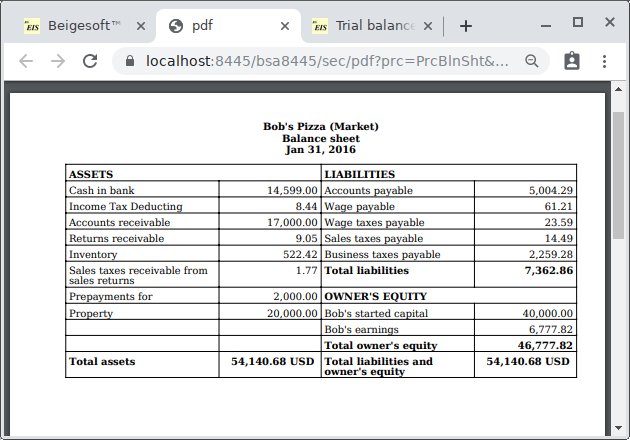

Financial (market) Accounting.
The law (IRS) demands Bob to keep entries (in either a single entry or a double entries accounting system)
to estimate his taxes in the calendar year period. Bob wants to estimate his real business results
monthly. Financial (market) Accounting (double entries system) is based on rule:
Assets - Liabilities = current market value of Bob's business (How much he can earn if he sold it right now) = Owner's equity
The most entries from Tax Accounting are relevant to Financial one. Excluded entries are:
- Property deprecation
- Closing entries (yearly)
- All bad debts entries
* In addition, you can learn about Financial Accounting by studying MIT Course Number 15.515 Fall 2003.
There lecture #10 "Accounting for Taxes" also describes "GAAP(Financial USA) vs. Tax Code(IRS)".
Bob unpacked the files from beige-accjet-bin.zip into the new folder accounting-market,
then he copied the keystore form the accounting-tax folder:
Then (before starting and creating a new database) he edited the \WEB-INF\web.xml to change the new database ID into 2:

Bob started using Beigesoft™ EIS Market in the same way as described in Software installation, accounting settings, chart of accounts, started capital,
except the "Chart of accounts", "Expenses" and "Started capital" accounts.
Import of data from Tax Accounting.
To use the WEB-services on the Intranet (localhost) Bob installed the Bouncy Castle Crypto Provider and the A-Jetty CA certificate as described in Import of an EIS database by using the WEB-service.
He launched the source database "Beigesoft™ EIS Tax" on port 8444.
Then he launched the destination market accounting on port 8445, the new market database will be created with ID=2.
He uses the "menu -> ... -> about" to see the database ID:
He added a new "Import acc. method" (in the "Menu->Administrator->Common") with these filter entries:
He filled the "import acc. data" form (the WEB-service address is "https://localhost:8444/bsa8444/adm/xml", the "user" and "password" fields must be matched to the Tax database) and pressed the "Submit" button:
The report of importing acc. data is:
Assessment of the market value of a depreciable property.
To report losses by the market rules, Bob created the "Other losses" account:
If you bought something (not for resale), then you usually can't sold it for the same price. Bob thinks that he can sold his Ford
right now (in January) for 20000 USD, so he reported the Ford value loss (transferred the loss amount into the "Other losses" account):
* this loss doesn't exceed the ford deprecation (that is made according to the tax rules) at the end of the year, so it's a taxable (business) expense.
Accounting of bad debts
In opposite to the tax accounting rules, Bob wants to report these losses immediately. The "Funny coffee shop" bad debt is 67.47 - 33.73 = 33.74 USD.
If IRS approve this bad debt, then the Bob's income tax deducting amount will be roughly 33.74 * 25% = 8.44 USD (25% is the predicted Bob's income tax rate).
So he created the Income Tax Deducting asset account:
* An ID for an account must be a word without spaces maximum 25 letters!
Then Bob transferred 64.47 USD and 33.73 USD into this account (with the same way as the bad debt in the tax database), then he transferred 25.30 USD from it into the Other losses account:
* to be brief, the sample database bobs-pizza-market6.sqlite contains only summary revenue and expenses entries instead of a lot of Purchase and Sales invoices.
The trial balance on 31 Jan is:
Closing entries monthly, the balance sheet.
Bob made on 31 Jan these closing entries into the Retained Earnings account:

After that, the gross revenue is 9,037.10 USD. So, Bob's income tax is roughly 9,037.10 * 25% = 2259.28 USD, so Bob transferred
it from the Retained Earnings account:
As a result the balance sheet on 31 Jan is:

So Bob earned 6,777.82 USD in January and his business market value is 46,777.82 USD.
* take note that it is a simple example that does not include other taxes and their proper rates, also liabilities, such as taxes, must be paid.
Accounting of business (trade/brand) name.
In February Bob sold pizza for 37,000 USD, expenses is 11,000 USD. So gross income = 26,000 USD,
income tax = 6,500 USD (Bob earned 19,500 in Feb vs 6,777 in Jan). Bob closed February with the result: his business market value is 66,277.82 USD.
But at this time (on Feb 29 evening) a businessman called Bob and asked him to sell Bob's pizza business for 80,000 USD.
Bob refused this offer and reported this event (increased business value for 13,722.18 USD) with the new Bob's pizza name asset account:
The market value of a brand name always depends on the number of customers who prefer the goods or services of the company (entrepreneur).
The balance sheet in February is:
* Despite rough income tax estimation, it would be better to use separate expenses accounts for "income tax deductible expenses" and "income tax non-deductible expenses".